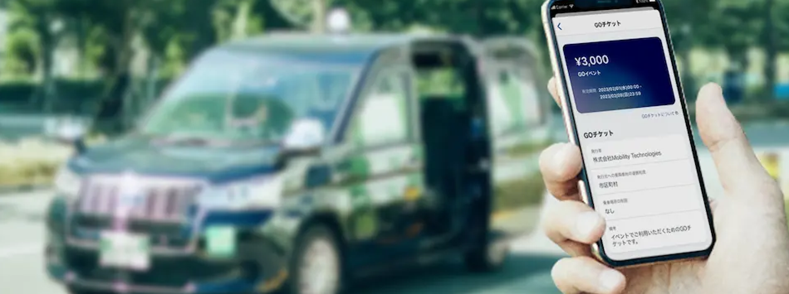
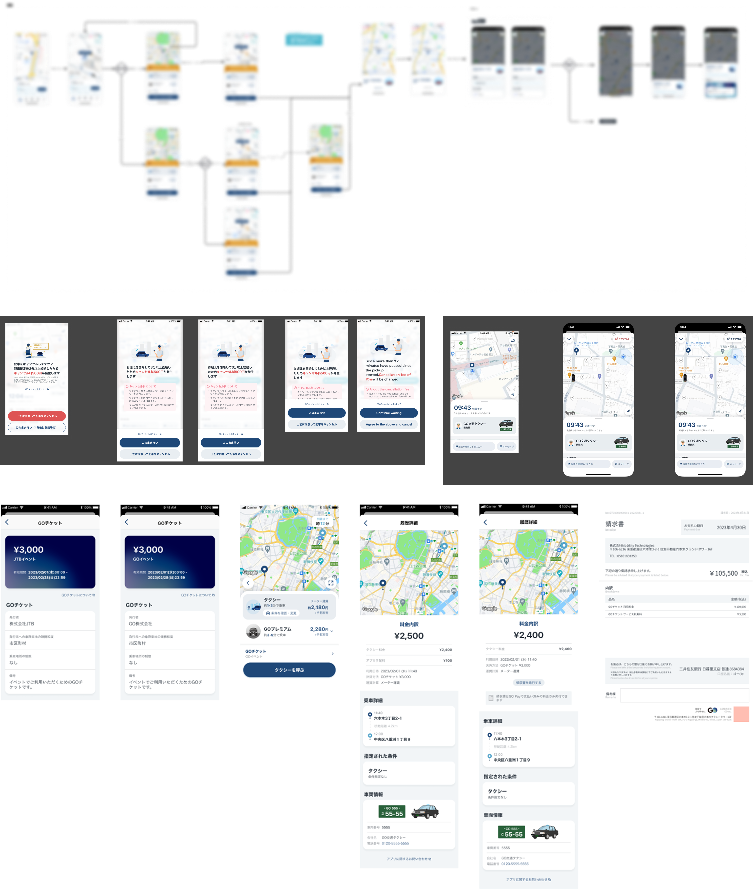

GO 個人向けタクシー配車手配サービス

- 概要
-
個人のスマートフォンからタクシーの配車依頼ができるサービス。メインで担当する法人向けサービスのGO BUSINESSに絡む機能のUI開発、実装されている既存画面の改善を担当
- 担当：UI/UX
- 使用ツール：Figman
- 2023年10月〜2025年5月
- 作業内容
- ⒈dMと協業しながら仕様/機能に適したUIを検討・提案する
⒉レビューや仕様変更の指摘を受けて着地点をPdMと擦り合わせる
⒊エンジニアと連携後、場合によっては開発環境に合わせて仕様を調整する
- 【User App】車両迎車中のユーザーからのキャンセルを防ぐ改善に向けたデザイン検討
検討したデザインはABテストを実施。数値分析の結果、各画面平均して2%程度の改善
・キャンセルを行うことで自身に起こる事象を理解することができること
・状況を理解した上で軽率なキャンセルを防ぐこと、納得してキャンセルできること
・キャンセルを防ぎ可能であればユーザーにそのまま待つことを促すこと
- 【GO BISINESS関連】GOチケット
